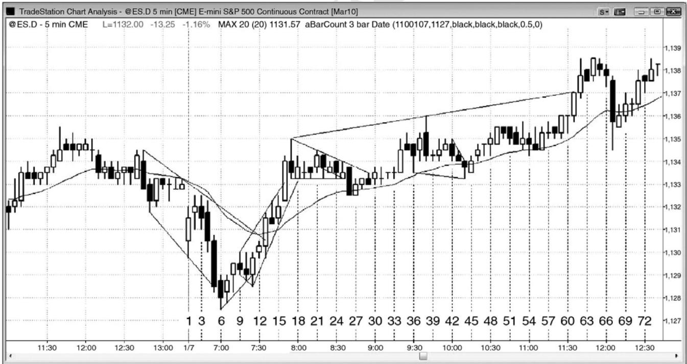
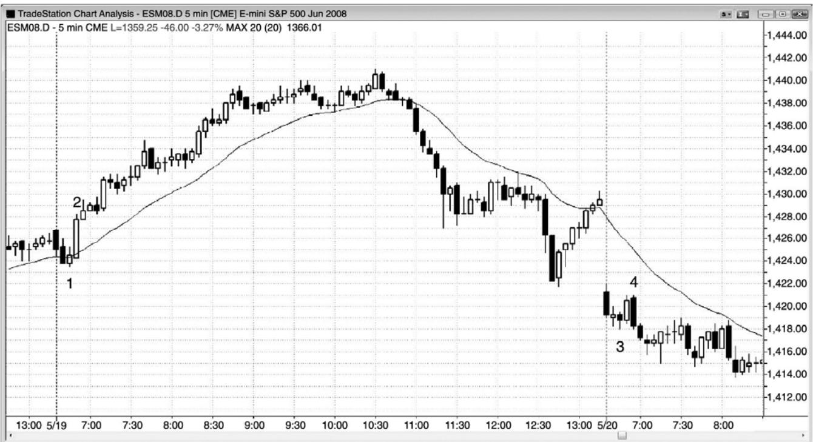
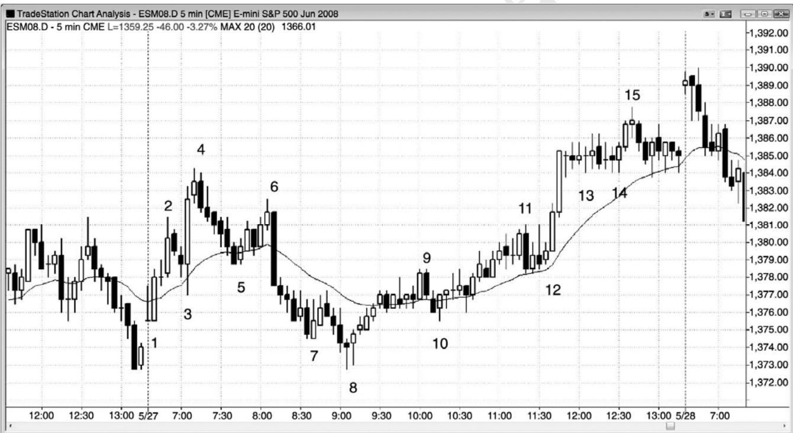
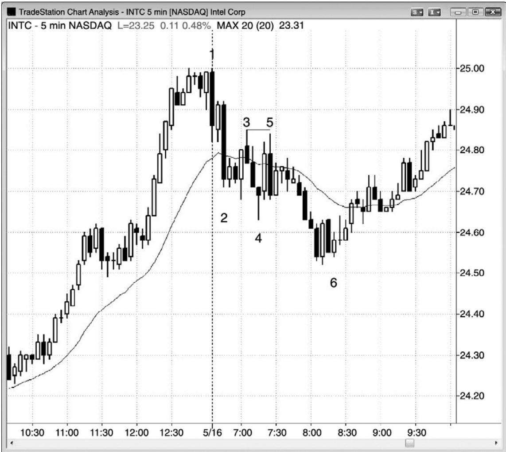
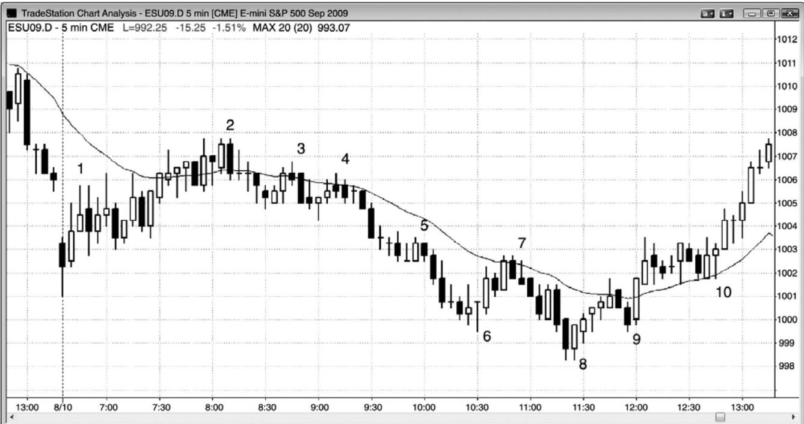

第16章 极端刮头皮¶
第 16 章 极端刮头皮
有一些高频交易公司，一天要对一篮子 4,000 只股票做几万笔交易，每笔刮头皮交易只为 1 便士的利润。那种形式的刮头皮是相当极端的，普通交易者们没有超级计算机连接交易所，所以是可望而不可及的。我有一位朋友是电子迷你中的极端刮头皮者，每天约做 25 笔交易，每笔交易刮取两个跳动的利润。他一直没有告诉我他是否使用保护性止损，也没有告诉我他一笔交易所允许的亏损有多大。对于我关于逐步加仓的问题，他也从未给出明确的答案。有些交易者拒绝透露太多有关他们的操作方法。我不确定是否是由于一种不现实的恐惧，害怕交易界会复制他们的做法，从而使他们的系统不再有效，还是由于怕人们知道他每天做大量交易，却只赚到一两点而不安。不过，他的确说过每笔交易约 100 张合约。一位共同的朋友告诉我，他已经去过他价值 200 万美元的房子，我相信他每年的收入超过 100 万美元。
虽然我认为对于极少数有能力那样做的人来说，这个话题是敏感的，但实际上对于大部分交易者来说是不可能的，所以大部分人决不应该尝试。一般而言，由于刮头皮通常需要风险大于回报，所以胜率必须至少 70%才能实现稳定获利。对于大部分交易者来说，那是不现实的，甚至非常成功的交易者也难以达到。不过，有一些人可以靠刮头皮为生。然而，大部分交易者只应该选择回报至少与风险一样大的交易，因为胜率至少为 60%的要求还是比较现实的。更好的选择，交易者们应该专注于回报至少为风险两倍的交易，因为那样即便只在一半的时间里赢利，他们也会赚钱。
尽管交易者们应该专注于波段，但是他们可能奇怪地发现 5 分钟图上的刮头皮架构比他们想像的要多得多。然而，仅仅因为架构存在并不足以成为交易的理由。实际上，没有人应该尝试去做 5 分钟图表上每天出现的 30 到 40 笔刮头皮交易，因为很难足够准确并快速地读图，以实现稳定获利。那些架构中，大约三分之一要用止损单入场，大约三分之二要用限价单入场。所有市场和所有时间框架都是如此；大约一半的棒线会形成合理的刮头皮架构。给出一个极端刮头皮的示例，可以很好地说明每天有多少细微的价格行为信息展现在你的眼前，那可能有助于你提高注意力。有些交易者可能一次做一两个小时的刮头皮，但是大部分人应该 2 到 4 点的波段。
很多时候，刮头皮们无论在当前价位做多还是做空都会赚钱，只要恰当地管理交易就可以。其实所有交易都是如此，而初学者们可能感到奇怪。举例说明，电子迷你中，如果一轮确立的多头趋势中出现一条大型多头趋势棒，而且很可能出现坚持到底，那么交易者们可以在那一棒收盘价附近买进，为了可能出现的回撤，所冒风险约为 3 点。如果市场直接到达他的目标，那么他可以获利出场。反之，如果市场回撤5到10棒，但是没有触发他的止损，那么他会等待回撤结束，趋势恢复，然后在当初的目标获利了结。大部分经验丰富的交易者会在回撤期间和突破多头旗形时逐步加仓。有些人会持有整个头寸直到市场到达他们最初的目标，他们将在那时获利了结。有些人可能选择在最初的入场点离场，首笔入场交易打平，后来入场的交易获利。
空头会在多头买进的相同价位做空，预期大型棒线代表着耗尽。如果市场在接下来的几棒下跌，那么空头会获利出场。反之，如果市场又上涨一两棒，那么他们可能逐步加仓，做空更多，所冒风险的跳动数可能与那条大型多头趋势棒相当。举例说明，如果那一棒的高度是 12 个跳动，那么他们可能在上涨4或8 个跳动时对空头头寸加仓，对于整个头寸，所冒风险距最初的入场点 12 个跳动。如果市场在他们逐步加仓后向下反转，那么他们就可以在最初的目标或原来入场点退出整个头寸。如果他们在最初的入场点离场，那么后来入场的交易都会有所获利，首次入场的交易则会打平。因此，刚好在同一时间入场，但是方向相反时，多头和空头刮头皮者们都会赚到一笔刮头皮利润。关键是奖金管理。

P178
图 16.1 中，5 分钟电子迷你图表显示出极端刮头皮。一天有 81 棒，图中每隔两棒编号。如果交易者希望使用两点的止损刮取 1 点的利润，那么今天至少有 40 次机会。记住，使用止损单入场的交易者，通常需要超越信号棒 6 个跳动的运动才能使用获利了结限价单刮取 4 个跳动。
棒 1 是一条多头反转棒，可能是对昨日收盘空头旗形的失败的向下突破。然而，它有两个跳动长的上尾线，而且它的高点只比昨日收盘价和均线低了 4 个跳动，所以可能没有足够的空间做多头刮头皮。在棒 1 上方买进的交易者，看到入场棒的弱势收盘，很多人会在盈亏平衡点附近离场。
棒 2 是一个十字星，它的收盘未能超越棒 1，这是多头势弱、空头势强的征兆。这一波单棒反弹可能形成一波突破回撤，之后可能是另一条下跌腿。交易者可能在棒 2 下方 1 个跳动处下单做空。
棒 3 没有令做空订单执行，但是它有一个空头收盘，而且那一棒没有向上超越棒 2。因此，它与棒 2 形成一个双重顶，刚好位于均线下方，可能引出一条下跌腿。交易者可能会在那一棒的收盘做空，在它的高点上方离场或者反转做多，或者设定卖空止损单在它的低点下方 1 个跳动处做空。这也可能会在多头入场棒棒 2 下方 1 个跳动处做空。那些多头中有很多很可能会在这一位置离场（在入场棒下方），助长了跌势。如果触发，这可能形成一个突破回撤，很可能引出一个下跌波段。交易者们可能会考虑刮取一两点的利润、把整个头寸波段化（他们将净赚 6 个跳动）、或者部分刮头皮（可能一半）部分做波段，希望波段部分赚到 3 点或 4 点。
棒 4 入场棒是一条强空头趋势棒，很可能最低形成一个当日新低。市场试着向上突破棒1，但是以失败告终，现在试着向下突破它的低点。由于市场位于均线下方，而且是从昨天一个空头旗形向下跳空，所以空头很强，可能产生一个不错的波段，完成一波测量运动。棒 2可能最后成为当日高点，当天可能成为一个强空头趋势日。面对这样的空头力量，交易者们可能会在做多入场棒棒2下方的空头收盘进一步做空，或者在棒4低点下方使用止损单做空，或者在向下突破棒1，向着一个当日新低运动时做空。
棒 5 在向下突破棒 1 后延伸为一条大型空头趋势棒。这要么是空头力量增加的征兆，要么是高潮卖出的征兆。由于棒 5 向下刺穿了一条空头趋势通道线，所以，如果市场从那里反转，那么可能至少形成两条上涨腿。另外，由于那是第二次尝试从昨日低点下方向上反转，所以它也是一个楔形反转，可能形成当日低点。交易者们可能会在那一棒收盘做空，但是，如果他们做空，那么如果市场在此处暂停下跌，他们就不得不准备在盈亏平衡点离场，而且他们不得不准备反转做多。开盘有一个下跌缺口，然后向均线回撤，而现在形成一波卖出高潮。这可能是一个尖峰和高潮底，由于大约 90%的交易日内当日高点或低点形成于大约第一个 90 分钟之内，所以交易者们必须把每个早期反转看作可能的当日极点。
棒 6 低点只比棒 5 收盘价低了 5 个跳动，因此，那些在棒 5 下方入场的空头只差 1 个跳动便能刮取到 1 点的利润。此时，他们变得不安起来。他们可能会在这一棒上方离场，有些人甚至可能已经反转做多。由于那一棒是一条空头趋势棒，所以空头仍在控制市场，大部分交易者仍持有空头头寸。棒 6 低点也是一波精确的下跌测量运动，测量基准是从棒 1 高点到棒 1 低点，也是两天前一波强上涨运动（未给出）的完美测试。
P179
棒 7 是一个多头双棒反转。对于空头来说，这有点麻烦。大部分人会试着在盈亏平衡点离场，他们本来愿意接受一两个跳动的亏损。有些交易者会在那个多头收盘买进，预期那一棒成为当日低点，并且很可能形成两条腿的反弹。另有交易者会利用较低时间框架图表和其他类型图表（比如成交量图或跳动图）上的反转入场做多。由于棒 6 区间大约有一半被它的前一棒和后一棒重叠，所以一个小型交易区间正在形成。逆势交易通常会出现回撤，因此，如果交易者们在 7 棒上方买进，那么他们需要在预料中的回撤期间持有多头头寸，希望它形成一个更高低点。
棒 8 在高点收盘，因此是多头在那一棒收盘前买进，表明他们急于做多。然而，截止棒6 的卖出很强，所以第一次尝试向上反转很可能失败，随后可能出现驱动市场下跌的尝试。另一种选择是在这个强势收盘买进。如果交易者们认为很可能形成第二条上涨腿，而且他们正预期上涨途中会出现回撤，那么他们会准备在接下来几棒中任意一棒的低点或其下方一两个跳动处买进，预期形成失败的低点1和一个更高低点。
棒 9 是一条空头反转棒，它未能收盘于棒 8 高点之上，而棒 8 是一条强多头棒。即没有坚持到底买进。或许多头势弱，棒 8 向上反转会失败，成为向下突破棒 1 之后的一个突破回撤，即一个低点 1 做空架构。由于市场正在从一个楔形底进行调整，很可能形成第二条上涨腿，所以那些已经做多的交易者不会在棒 9 下方 1 个跳动处做空，而是继续持有多头头寸，并将止损设在信号棒棒 5 下方。由于它只比当日低点高出 1 个跳动，所以他们可能会把止损设在只比当日低点低 1 个跳动处。有些多头仍未买进，他们会等着在更高低点（如果形成的话）买进。激进型多头会使用限价单在棒 9 低点买进，认为市场可能不得不下探 1 个跳动，让他们的做多限价单得以执行，而且如果市场从那里向上反转的话，空头将被 1 个单跳动失败套入空头交易，他们会非常急切地离场，帮助驱动市场上涨。另有一些多头会设定限价单在棒 9 低点下方 1、2 或 3 个跳动处做多。所有这些订单都会给市场带来支撑。如果市场下探至棒 9 下方 1 个跳动，然后在接下来的几秒内向上反弹两三个跳动，那么将买进限价单设在棒 9 下方两个或 3 个跳动处的一些多头就会把他们的做多限价单向上调整一两个跳动，因为当看到市场未能下跌时，他们变得更急于入场。棒 9 是一个糟糕的低点 1 做空架构，因此很可能形成一个更高低点。市场已经形成一个强空头尖峰，那是低点 1 所需的，但是市场显然不是在一轮空头趋势中，那也是在低点 1 做空前所需的。另外，交易者不应在一波卖出高潮之后的低点1做空，而这可能是卖出高潮之后的低点1。
空头把棒 10 看作空头趋势中的一个双重顶，希望随后会形成一波类似于棒 2 和棒 3 双重顶之后形成的运动。然而，他们担心那个楔形底，如果市场没有快速下跌，他们就会快速退出任意新的空头头寸，就像当天早些时候所发生情况一样。
棒 11 跌破棒 9 两个跳动，然后向上快速反弹。试图在棒 9 低点和棒 9 下方 1 个跳动买进的多头，高兴地入场，那些希望在棒 9 下方两个或 3 个跳动买进的多头担心自己已经错过机会。他们把自己的限价单改为市价单，致使棒11快速向上运动。另外，那些在棒9下方做空的空头，担心那个低点 1 会失败，那个楔形将出现第二条上涨腿，于是他们现在在市价、或1、2 或 3 分钟棒的高点上方、或成交量图或跳动图的棒线上方平仓。棒 11 收盘于过去六棒的收盘价之上（强势征兆），它本质上是一轮可能的新多头趋势起点处的一条外包上涨棒。有些多头会在这个强势收盘买进，考虑到它出现在棒 7 和棒 8 的强势买进之后，趋势可能已经向上反转。它的高点没有超越前一棒高点，但是低点比前一棒低，高点与前一棒位于同一价位，所以市场会把它看作一条外包棒。此时，它与前两棒构成一个三重顶，如果市场没有向下反转，而是上涨 1 个跳动，那么该形态将变成一个失败的顶，随后很可能出现更多买进。棒 11 还向下突破了利用棒 6 和棒 7 绘制的趋势线以及利用棒 9 和棒 10 绘制的趋势通道线，于是形成一个小型的决斗线做多架构。棒 9、10 和 11 形成一个小型的扩张三角形，它的作用应该像一个多头旗形，而不是一个反转形态，因为很可能形成第二条上涨腿。
棒 12 向上突破了三重顶，也向上突破了外包上涨棒棒 11 的高点。尽管它是一条小型棒，但是它超越了那个三重顶两个跳动。如果它就在突破 1 个跳动后向下反转，那么交易者们就会把它看作一个可能的做多陷阱，他们将打算退出多头头寸。空头还会把它作为一个两条腿空头反弹而做空。有些空头会在这一棒下方 1 个跳动处下单做空，以防它变成一个低点 2 做空架构。不过，由于它的高点如此接近均线，所以，如果市场首先触及均线，那么他们将对自己的空头头寸感到更加自信。在均线被触及之前，很多人不打算做空，因为在市场触及均线之前，他们会担心市场在测试均线之前可能只是横盘。当市场进入距磁力位约 1 个跳动的范围内时，交易者们对测试并不自信，除非市场再运动那一个跳动，实际触及磁力位。在那种情况发生之前，他们通常不会把它作为一个完成的回撤积极交易。有些多头会在这一棒上方加仓，认为它是空头失去的一个控制机会，那使用市场更有可能上涨。棒 12 的高点比棒 3低点低了两个跳动，距那些空头交易的盈亏平衡止损 1 个跳动。如果市场此时没有下跌，那么将形成一个完美的突破测试（说它完美，是因为它对那些止损的测试尽可能靠近，而实际上却没有击中）。反之，如果市场再上涨 1个跳动，那么这次突破测试就会失败：剩余空头就会平仓，他们的买进将会失去市场上涨。多头知道这一点，会设定买进止损单刚好在那一价位加仓，利用空头平仓获利。
P180
棒13是一条强多头突破棒，市场向上突破均线、空头趋势线、以及强空头趋势棒棒5高点，而且收盘远高于以上价位。空头旗形失败，向上突破，交易者们会寻找一波近似的上涨测量运动。如果它是一个成功的空头旗形，那么他们会预期市场测试当日低点。一旦它失败，他们就预期市场将上涨大约相同的点数。多头会在这个收盘买进，预期市场测试当日高点。那一天的区间只有 5 点，大约为近期平均日区间的一半，所以市场可能形成一波向上或向下的测量运动。此时，由于空头刚刚平仓，在至少再出现两次上涨尝试之前，他们很可能不会做空，那将使得多头在下几棒控制市场。如果说要出现一波测量运动，那么此时更可能是上涨。
棒 14 是一条空头反转棒，可能形成一个更低高点、一个失败的突破、以及一个低点 2 做空架构。然而，由于刚刚列举的原因，市场在棒13突破之后更有可能至少出现两次上涨尝试，因此，如果这个做空架构触发，那么它更有可能失败，它的失败将形成一个突破回撤做多架构。因此，多头会在任意跌破它低点的运动中买进。如果即将出现一波低于它低点的单跳动运动，形成一个单跳动做空陷阱，那么激进型多头会希望在那一波运动买进。为了买进，他们会设定限价单在棒 14 低点做多。这是因为棒 14 下方可能没有足够的空头做空以执行激进型多头设定的所有那些做多限价单。由于是多头控制市场，所以可能有更多交易者打算买进，而不是卖出。或者，如果触及棒线下方的买单，那么多头会设定市价单，或者就在市场跌破棒 14 时在市价买进。另有多头会设定限价单在下方两个和 3 个跳动处做多。
有些交易者会希望在两点和3点的回撤买进，会设定限价单在棒14高点下方7个跳动和11个跳动处做多。如果市场刚好回撤了两点，那么大部分试着在那波回撤终点买进的交易者只能在下方 7 个跳动处做多，不能刚好在低点做多，因为在低点跳动处，订单需求量远远超过供给量，那些多头不得在在高出 1 个跳动处买进。
最后，有些多头会把每个空头架构都看作多头架构，会假定有被套的急切空头在空头收盘前做空。那些空头将不得不在某个点处买回他们的空头头寸，很多人会把他们的买进止损设在这条空头反转棒上方 1 个跳动处。聪明的多头知道这一点，问题试着在被套空头平仓的价位做多。因此，这些多头会在棒14上方1个跳动处设定买进止损单。
棒 15 的高点超越了棒 14 空头反转棒的高点，但是在收盘时回撤。棒 14 和 15 双重底可能不会成为一个多头旗形，不会像棒 2 和 3 双重底那样引起下跌。另外，那一棒的高点与开盘高点形成一个双重顶，所以当天的走势已经转变为一个双重顶空头旗形，可能在当日低点下方形成一波测量运动。棒 13、14 和 25 的高点形成一个微型楔形。如果该楔形触发，市场运动至棒 15 低点下方，那么可能出现一波两条腿横盘至下跌调整。反之，如果市场向上突破，那么上涨运动可能会突破至一个当日新高，并且超越微型楔形，可能会有更多空头平仓，新的多头在突破刮头皮。
棒 16 是一条大区间突破棒，突破了一条趋势通道线。它可能是一波买进高潮，随后可能至少是一波两条腿横向至下跌调整，可能持续 1 小时或更长时间。每当一轮多头趋势已经行进了一段时间之后出现一条大型多头趋势棒时，几率偏向于它代表着耗尽，最后的弱势多头买进，最后的弱势空头平仓，强势多头和空头等待这样一条大型多头趋势棒的收盘以卖出（多头卖出他们的多头头寸而获利，空头新建空头头寸）。剩余空头只会在回撤离场，强势多头可能会在回撤后两次买进。这类似于棒 5 代表的卖出高潮。棒 16 高点只比昨日高点低了 5 个跳动，而昨日高点是一个阻力位，因此，那些打算在这一棒高点上方买进做刮头皮的交易者们，可能担心市场不得不向上趋势那一阻力位才能使他们赚到 1 点的利润。有些多头会在这一棒收盘买进，因为他们会在市场刚好测试昨日高点时离场，获利 1 点的利润。精确测试比向上突破高点更有可能出现，但是一个更低高点甚至更有可能出现，尤其是在趋势通道线过冲之后。一些新多头可能会在市场表现出任何犹豫或回撤时快速离场，因为当在阻力区内一个可能的买进高潮买进时，他们 1 个跳动也不希望失去。而另有一些交易者会使用较宽的止损，并且会在市场向不利方向运动时加仓。这些交易者最终会取得成功。激进型空头会在棒 16 收盘、或者在它的高点或其上方做空，而且会在继续上涨时逐步加仓，承担风险约与棒 16 中的跳动数相当。由于棒 16 的高度为两点，所以他们可能会冒着两点的利润去博取 1 点的利润，他们会席卷在棒 16 收盘或高点上方 1 点处卖出更多。他们未能在上涨时逐步加仓，但是能够在棒26强空头趋势棒以1点的利润逐步离场。他们的获利了结助长了棒26后面的向上反转。记住，所有交易者把每一跳动看作既是一个买进架构，也是一个卖出架构，常常会为了两种可能的交易去评估交易者方程。每天中都有很多时候多头和空头都可入场做刮头皮，并且都会赚钱，前提是他们要正确地管理自己的交易。棒 16 收盘便是一例。
P181
棒 17 在棒 16 上方运动 3 个跳动后向下反转。那些迟入的多头快速离场，激进型空头开始做空。棒 17 成为一条强空头反转棒，空头会准备在它的收盘价和它的低点下方 1 个跳动处做空。另外一些空头可能已经在较小时间框架上做空。这是一个多头不会买进的空头架构。一旦市场跌破棒 17 低点，多头就会认为那是一个对多头趋势通道线的失败的向上突破，他们和空头都预期出现两条腿调整，持续 1 个小时或更长时间。在调整完成之前，多头不准备积极买进。由于交易者们正在寻找两条腿调整，所以空头会开始设定限价单在一个更低高点做空。截止棒 17 的上涨运动是一个强多头尖峰，所以多头正希望出现一条多头通道和一波向上的测量运动，测量运动的点数与从棒 6 或棒 11 低点到棒 17 高点的尖峰点数。
棒18没有触发做空，成为一条空头内包棒。由于交易者们正预期出现一波两条腿调整，所以聪明的交易者们不会准备在它的高点上方买进，激进型空头会设定限价单在它的高点及其上方1个和两个跳动处做空，止损在棒17空头反转棒高点上方。
棒 19 没有执行棒 18 高点处的那些做空限价单，也没有触发棒 17 和 18 低点下方的卖出止损。反之，现在形成一个 ii 形态。不过，多头仍然不会买进，空头正急于做空。
棒 20 现在是一个 iii 架构，它有一个空头收盘，偏向于空头。聪明钱仍然打算在棒 17下方（iii 下方），以及更低高点做空。
棒21可能是每个人正预期出现的做多陷阱。它是第二条上涨腿（棒18是第一条），在棒18 上方延伸了 1 个跳动，其他误解了市场的多头也很可能在那里做多。没有任何被套的空头，因为大部分保守型空头会在棒17下方使用止损单入场，而那种情况仍未发生。现在市场中唯一的空头是那些聪明、激进的空头，他们正希望出现一个更低高点做多陷阱。他们希望市场中有被套的多头，因为，如果市场下跌，那么这些多头将不得不抛出他们的头寸，这将增加卖压。另外，在多头被套之后，他们会希望等待更多价格行为，然后才会准备再次买进。聪明的多头已经在等待两条腿调整，所以此处没有严肃的买进。弱势多头错误地在 iii 形成买进。聪明的空头正在 iii 形态上方 1、2 和 3 个跳动处做空，保护性止损设在棒 17 高点上方。空头可能打算在这一棒下方做空，特别是在棒 17 下方，它是一条强空头反转棒。大部分空头会等待在棒 17 下方做空，因为他们把它看作是对顶部的确认。然而，聪明的空头只在寻找刮头皮，因为之前的上涨运动很强，而且当天的区间仍然小于平均。此时，如果区间即将扩张，那么上涨的可能性比下跌的可能性大得多。另外，每个人都认为那波买进高潮极有可能是一次暂停，随后至少再出现一条上涨腿。这一波横向至下跌调整可能形成一个最终旗形，然后一个下跌波段，但是仅在向上突破之后才会发生那种情况。
棒 22 将棒 21 反转进入一个更低高点最终旗形做空架构（iii 下降三角形是最终旗形），但是那一棒未能延伸到iii形态下方，未能使更多空头准备使用止损单在旗形下方和棒17下方入场。另外，那一棒在中点收盘，也就是说交易者们在那一棒收盘前买进，这与空头控制市场时所应出现的情形相反。
横向调整在棒 25 继续，市场正在形成一条紧凑的交易区间，交易区间是一种突破架构。空头希望市场在一两棒内跌破棒 17，那将表明存在卖出的紧迫感。市场正在横向调整，而不是下跌，这是多头势强的征兆。另外，市场现在只比均线高出两个跳动，由于市场可能会在那里找到支撑，而且调整长度为10棒，所以多头可能开始准备重新入场做多。对于空头来说，这有点麻烦。他们原本预期出现一个高胜率的做空刮头皮架构，现在成功率变得较低。如果空头突破停止，那么他们会快速平仓。棒25触及利用棒17和21画出的空头趋势线，形成一个下降三角形，当它出现于多头趋势中时，是一种多头旗形。然而，如果使用棒线实体的话，棒 21 到棒 25 也是在一条小型通道内。通道常常包含三推，然后尝试反转，就像楔形一样。棒 22 和 24 是两次下推，所以可能只会再出现一次下推，因此，对三角形的向下突破可能失败。
棒 26 是一个空头突破，收盘于低点，位于均线下方。新空头正希望市场在下方一两个跳动处执行他们的获利了结限价单。然而，那条空头趋势棒的收盘只比均线低了 1 个跳动，强势突破会收盘于下方 7 个跳动，比如棒 13 多头突破的收盘比均线高了 7 个跳动。它也是对开盘高点向上突破的一个精确测试。甚至在多头趋势棒棒21收盘做空的激进型空头仍未能够刮取 1 点利润；如果市场在此处向上反转，那么他们将得到一个五跳动失败，买回他们的空头头寸。在棒 16 收盘或其高点上方做空的空头，此处买回他们的空头头寸。多头把棒 26 看作空头尝试令市场翻转为总在场内空头，但是他们知道大部分反转尝试失败。他们认为空头需要下一棒是一条强空头趋势棒，才能说服交易者们市场的总在场内方向已经翻转。由于多头趋势非常强劲，所以他们怀疑空头不会成功，甚至不认为空头能够失去市场跌破空头趋势棒棒 26 的低点。因此，他们在那条空头趋势棒的收盘买进，而且会在它的低点下方买进更多。另外一些多头会设定限价单在棒 17 高点下方 7 个跳动处买进，因为他们正试图在多头趋势中两点和 3 点的回撤买进。
P182
棒 27 是一条多头内包棒，可能会在均线处形成一个高点 2 做多架构。它可能是一波持续10 棒左右的两条腿调整，那对于多头来说可能已经足够长。在截止棒 17 高点的上涨尖峰之后，多头希望出现一条上升通道，这一波向均线的回撤可能是通道的起点。它还可能是对棒2 高点的突破测试。也可把它看作一个突破回撤，空头会在它的低点下方做空，那也是空头突破棒棒 26 的低点。空头希望出现一个空头实体，以增加总在场内方向向空头翻转的几率。一旦交易者们看到多头收盘，他们就会假定空头失败，总在场内方向依然向上，他们就在那一棒收盘及其上方买进。
棒 28 是第二条多头内包棒，形成一个 ii 形态。此时，交易者们想知道交易区间是否正在继续，突破是否正在更多卖压进入前暂停，或者突破是否已经失败，多头正再次取得控制权。
棒 29 是对 ii 形态的多头突破，是对均线和开盘区间突破的成功测试。然而，它只突破了 1 个跳动，而且只是一条小型空头趋势棒，很容易形成一个做空架构，作为棒 26 空头突破的回撤。空头会在它的低点下方下单做空。然而，所有在过去 1 小时做空的空头，现在担心市场有机会给他们一笔刮头皮利润，但是失败了。他们不该持有空头那么长时间。他们会在空头趋势棒棒 26 高点、棒 23、24、25 三重顶、棒 21 更低高点、棒 17 买进高潮高点、以及昨日高点上方设定买进止损。由于所有这些止损彼此都在一两个跳动之内，所以这些止损可能会在一连串止损猎杀中被快速击中，结果使空头放弃，多头掌控市场。
棒 30 超越了棒 29 高点，向上突破空头趋势线 1 个跳动，但是未能向上突破做空入场棒棒 26。这是一波两条腿上涨，空头可能会认为它是空头突破之后的一波可接受的调整，但是他们会担心自己的空头交易表现不佳。他们会快速买回自己的空头头寸。多头知道调整有两条腿，而且现在已经持续了大约10棒，所以他们的最低标准已经达到，他们正准备积极买进，希望出现一波向上的测量运动，到达 1,127.50 区域。这一幅度足以使他们把部分或全部新头寸波段化。他们会把那些空头止损中的每一个看作买进架构，会在空头平仓的同一价位买进。当市场上涨时，由于多头和空头正在相同价位买进，所以市场应该会加速上涨。有些多头也把这个交易区间看作一个楔形多头旗形，棒 17 是第一次下推，棒 20 是第二次，棒 26 是第三次。他们也把第三次下推看作包含一个较小的楔形，棒 22、24 和 26 形成三次下推。
棒 32 和 33 是小十字星，是交易者们正决定猎杀那些买进止损的征兆。此时，空头正开始在市价平仓，因为他们知道自己的空头交易只是逆势刮头皮。他们很可能乐于在打平、甚至亏损一两个跳动的情况下离场。市场一直保持在均线上方，在一个大的上涨尖峰之后，那是看涨的。
棒 34 是一条多头趋势棒，但是它的收盘离场了高点一两个跳动。市场在棒 17 高点和昨日高点区域内遇到卖家。
棒35给了多头一笔刮头皮利润，但是形成一条空头反转棒，以1个跳动的优势成为当日新高。有些交易者会在那一棒收盘做空，有些交易者会在它的低点下方 1 个跳动处做空。激进型多头不会受回撤干扰，希望那成为一次突破回撤，将引出一波超越昨日高点的运动。只要市场位于均线、棒26更高低点、或棒34多头趋势棒低点上方，他们就坚持做多。
在棒 36 做空的空头，担心那一棒将在他们的入场价位收盘，担心自己不能失去市场跌破棒 34 多头入场棒。他们会在那一棒的收盘价和它的高点上方平仓。有些多头会在它的高点上方做多，但是大部分多头不会那样做，因为那是在当日高点附近买进，而当天市场已经在交易区间内运动了一两个小时。在当天高点买进只是强多头趋势中的好策略，那不是当前的价格行为。
棒37是一条多头趋势棒，但是在基本重叠的三条大型棒上方买进是不好的。那三棒形成一个交易区间，在交易区间顶部买进的冒险的，因为大部分突破失败。如果交易的话，最好在那里做空。
棒 38 在棒 36 做多信号棒上方 5 个跳动和昨日高点上方 1 个跳动处向下反转。很多当天早些时候入场的多头很可能会设定限价单在昨日高点获利了结，激进型空头也会在那里做空。棒 37 多头在 5 跳动上涨之后很可能会把他们的止损移至盈亏平衡点，市场跳穿了那些止损。棒 38 成为一条大型空头反转棒，但是，由于它与前四棒重叠太多，所以正在形成的形态更像是交易区间而不是反转。这是第二次尝试反转开盘高点，因此，有些交易者会设定止损单在这条空头反转棒下方 1 个跳动处做空。另外一些交易者则准备在更低高点做空。截止棒 38 高点的上涨运动可以看作多头趋势线突破之后的一个两条腿更高高点，因此，它可能是一个趋势反转。因此，多头可能会在再次买进前等待一波两条腿调整。
P183
棒 39 是一条十字星内包棒。空头仍然会试着在棒 38 低点下方做空，现在，另外一些空头会设定限价单在更低高点做空。他们会设定限价单在棒 39 高点、以及上方一两个跳动处做空。过度急切的多头会把它看作一个高点 2 买进架构（棒 37 是高点 1），会在激进型空头做空的位置刚好做多。市场现在处于当天的中间三分之一时段，更有可能形成交易区间，所以多头必须要有耐心，他们必须避免在高点买进，除非市场再次变得非常强。
棒 41 也缺乏力量，如果市场跌破这一棒低点，那么那些在棒 40 及早买进的多头会快速承担两个跳动的亏损。空头会在这里那里做空，预期出现一个更低高点，但是他们不会非常热情，因为市场正开始形成重叠的带尾线的小型棒（那是一种带刺铁丝行为），突破入场更有可能失败。通常，在带刺铁丝底部附近的突破买进，在顶部附近的突破做空，会更好一些。
棒42会使那些高点2多头中的一部分平仓，其余多头会在棒38和信号棒低点下方平仓。
棒 43 将使得交易者们猜测市场是否正在形成一个楔形多头旗形。小型的横向头肩顶常常变成三角形或楔形多头旗形，棒 35 和 40 是两肩。由于交易者们正在寻找楔形多头旗形，所以他们正试图找出三次下推和一个高点 3 做多架构。棒 36 和 38 是头两推。棒 43 是第三次下推的起点，如果从那里开始向上反转，那么该楔形多头旗形（失败的头肩顶）就会触发。
棒 44 向下突破棒 36 低点 1 个跳动，是对棒 27 和均线向上突破的测试。尽管它有一个空头实体，但它可能是一条信号棒（交易区间内的信号棒常常看起来很糟糕）。实际上，仅当准备在强趋势中做逆势交易时，交易者们才需要一条不错的信号棒，其余大部分时间里，信号棒常常看起来很弱。激进型多头设定限价单在棒 36 低点买进，预期对它的任意向下突破都将在几个跳动内失败。另外一些多头会在这一棒上方的高点 3 买进，因为它可能是一个楔形多头旗形。如果市场向上超越棒 44 的高点，迫使被套空头买回他们的空头头寸，那么这也可能是一个 5 跳动做空陷阱。
棒 45 触发买进，尽管它只比棒 44 高点高出 1 个跳动。在一天的中间三分之一时段，市场常常缺乏动能，尽管价格行为的实际外形通常是可靠的。另外一些交易者可能会在棒 45 上方买进，因为他们把它看作一个双棒反转。另外，很多交易者喜欢在多头棒上方买进，因为多头收盘意味着市场已经至少向他们的方向运动了一点儿。
棒49带给多头1点的刮头皮利润，但是很多多头一直会在每个信号买进，部分刮头皮，部分波段化。截止棒 17 高点的强抛物线暴涨可能是一个尖峰，此后的双向交易在均线找到支撑，可能形成一条通道。波段多头不断买进，并且把他们的保护性止损跟踪调整至最近的波段低点下方，即棒44下方。
在当天剩余时间，还有很多类似交易，但是这个示例说明，如果交易者们有能力集中精力，头脑清晰地读图，那么他们可以在一天中做几十笔刮头皮交易。然而，对于大部分交易者来说，极端刮头皮是一种失败的策略，因此他们不应尝试，他们决不应该使用高于回报的风险。相反地，他们应该把自己限制在使用更容易成功和更容易使用的方法上。本章只是为了说明每张图表上发生的交易比看起来要多得多，以及交易者在一中需要怎样去不断地思考。今天有很多架构，交易者可以寻求至少与风险一样大的回报，但是他应该考虑看到的每个架构。通过这张图表，我们可以看出交易者在一天中可以做多少次决定。大部分经验丰富的交易者只会选择这些交易中的一部分。
P184
第三部分 第一小时（开盘区间）
我曾经与一位交易者在线上讨论过很多次，他一次交易 100 张国库券期货合约，但是在每天的太平洋标准时间上午 7:30 到 8:00 之后，他便消失了。他说他分析过自己的业绩，发现 85%的利润都是在第一小时内赚到的，于是认为在一天的剩余时间只是在情绪上自我消耗，有时那种情绪会持续到次日。因此，几年前他便在第一小时前后停止交易，仅仅第一小时便交易得非常好。以下是第一小时的一些特征：
• 此处所说的第一小时很少恰好是一个小时。它是第一个优良波段开始前的时间，可能是15分钟或两个小时；我们常常称之为开盘区间。
• 它是最容易赚钱的时间。经验丰富的刮头皮者们知道反转很常见。这些交易者常常能够做很多精挑细选的刮头皮，打赌突破尝试通常失败，就像一天中任意时间的突破尝试一样。他们打算低买高卖。一般来说，他们避开十字星信号棒，但是常常在一波上涨运动之后的多头或空头趋势棒下方做空，或者在一波下跌运动之后的多头或空头趋势棒上方买进。同一方向连续的趋势棒常常指明他们的下一笔刮头皮交易的方向。两条连续的强多头趋势棒通常会使刮头皮者们准备买进，连续的空头趋势棒则会使他们偏向于做空。
• 它是最容易赔钱的时间。新手们看到大型趋势棒，担心错过巨幅突破。他们买进较迟，在强多头尖峰的顶部，而且做空较迟，在强空头尖峰的底部，只是接受重复亏损。有更多变量需要考虑，而且架构形成得更加迅速。由于他们常常将波段架构和刮头皮架构相混淆，所以最后常常是错误地管理了交易。他们决不应该刮头皮，特别是不应该在第一个小时内刮头皮。
• 当棒线很长时，交易者们应该使用较宽的止损，并且交易较小的规模。
• 昨天收盘前的总在场内方向常常会带到今天开盘。
• 反转很常见，常常突然发生，而且幅度常常很大。如果你研读价格行为的速度不够快，那么就等到市场放缓，总在场内方向变得清晰。
• 当天第一棒成为当日高点或低点的时间只有20%左右，所以不要感觉需要在第二棒入场。实际上，无需匆忙选择任何交易，因为不久总在场内方向就会变得清晰，成功交易的几率将会更高。
• 当日高点或低点通常在第一个小时之内形成，因此，波段交易者们要耐心等待一个可能成为当日极点之一的架构。形成当日高点或低点的架构，常常只有 40%的成功率。由于回报可能比风险大很多倍，所以波段交易的交易者方程仍然可能是非常好的。大部分交易者应该专注于开盘区间内的一个逻辑反转，为了一天中最重要的交易。该交易在 5 棒或更多棒常常看起来很糟，但是突然突破，总在场内方向变得对大部分交易者都很清晰。大部分交易日，交易者在抓住一个成功波段之前不得不选择一个以上的反转，但是即便那些运动幅度不大的反转，通常也会令交易者赚到小幅利润，或者只有小幅亏损。对于这一特殊类型的胜率相对较低的交易来说，这将产生一个非常棒的交易者方程。
• 当日高点通常从某种类型的双重顶开始，尽管双重顶很少是完美的。当日低点通常从某种类型的、并不完美的双重底开始。
• 一旦总在场内方向变得清晰，交易者们就可在市价或任意小幅回撤入场波段交易。经验丰富的刮头皮者们寻找回撤在趋势方向逐步加仓。
• 报告后数分钟内的交易是由计算机程序主宰的，很多计算机几乎瞬间便收到了报告的数字版本，并且使用那些数据来产生交易。另外一些程序权衡的是统计数据，不是基本面。在一个你的对手拥有比你快得多的决策和下单速度的环境里，参与竞争是非常困难的。最后在入场前等上一两棒。
• 大部分交易者都是缺口开盘（见关于缺口开盘的第 20 章）。
• 开盘常常预示着交易日的类型。如果第一棒是一个十字星，或者头几棒重叠并且拥有突出的尾线，那么那个交易者比较可能出现大量的双向交易。
P185
太平洋标准时间上午 7:00 常常会有报告发布。即便报告没有在网上列出，市场的行为通常也像是有报告发布。在分析速度和下单方面，计算机拥有明显的优势，而且它们是你的竞争对手。当你的对手拥有巨大的优势时，不要参与竞争。等待他们的优势消失，当速度不再重要时交易。
第一小时——或者更为准确地说——开盘区间，是市场正在形成当天第一轮趋势的时间，一旦趋势开始，它也就结束了。它常常持续一两个小时，有时可能短到只有 15 分钟。它是最容易赚钱的时间，同时也是最容易赔钱的时间。这是因为，很多交易者不能以足够快的速度来处理所有变量，而且信息有限，因为当天还没有形成多少棒线。他们不得不决定是做波段交易、刮头皮交易、还是两者都做，而且不得不将决策建立在三个交易者方程变量——胜率、风险和回报之上。在他们所处的环境中，通常会出现经济报告，常常出现反转，因此必须经常做出决定，棒线通常都比较长，因此需要他们把风险调到远高于正常水平，而在一天其余时间里，风险这个变量通常是一个固定值，通常不需要过多考虑。想像出来了吗？交易者有更多问题需要考虑，同时考虑的时间却比平常要少。在分析速度和下单方面，计算机拥有明显的优势，而它们是你的竞争对手。当你的对手拥有巨大的优势时，不要参与竞争。如果你在想，“伙计，我希望拥有使用计算机做程序交易的公司所拥有的速度优势，”那么你会认识到自己处于劣势。等待他们的优势消失，当速度不再重要时交易。
交易很难，优势总是很小，第一小时增加的复杂性会超出交易者有效交易的能力范围。如果为了交易获利有太多的变量需要考虑，那么交易者们可以通过减少变量数来增加自己的成功率。举例说明，他们可以决定只寻找高胜率刮头皮架构或只寻找可能的波段架构，或者可以等到出现明确的总在场内方向，然后做波段交易，或者在那个方向刮头皮，在回撤入场。他们还可以交易正常规模的一半到四分之一，使用超出信号棒的保护性止损，那常常需要比正常幅度大两倍或更多倍的止损。
导致交易者亏损的最大原因之一是，交易者没有能力区分波段架构和刮头皮架构。通过交易者方程，读者们知道刮头皮者们通常不得不在 60%或更多交易中取胜，因为风险通常不得不与回报差不多大。刮头皮架构比波段架构常见得多，但是大部分刮头皮架构的成功率不到 60%，所以应该避免使用。然而，第一小时内的反转很常见，交易者们常常没有足够的时间去充分地评估交易者方程。如果他们的错误是选择第一个反转，然后在入场后进行评估，那么随着时间的发展他们将会赔钱。当日高点或低点之前常常是一个成功率不足 50%的架构，所以是一个可怕的刮头皮架构，但是它仍然可能是一个极好的波段架构。
经验丰富的交易者们通常能够在第一小时内找到 4 个或更多刮头皮架构，甚至能够靠那些交易生活。举例说明，如果他们平均一天做两笔获利的刮头皮交易，每笔的利润是两点，并且交易25张电子迷你合约，那么他们一年便会赚到100万美元。当不得不快速决策，而且只有 5 棒或 10 棒的信息时，大部分交易者不能可靠地研判风险、回报和胜率，因此，当反转来得迅速而又突然时，他们不应在第一小时内刮头皮。反之，他们应该耐心等待一个很可能引出总在场内波段的架构，或者等到波段已经开始，市场有了明确的总在场内方向时，然后入场波段交易。那样，他们的回报将大于风险（可能是风险的两三倍），由于总在场内方向是清晰的，所以有 60%或更高的几率市场至少会向他们的方向运动与所承担风险差不多的跳动数，在那一点，他们就可以把止损移至盈亏平衡点。
很多经验丰富的交易者在第一小时内寻找强趋势棒或连续的趋势棒，然后在回撤刮头皮。举例说明，如果出现两条连续的强多头趋势棒，然后是一条十字星棒，那么他们可能设定限价单在十字星棒的低点或其下方买进。由于他们把它看作一个疲弱的反转信号，特别地，它出现在这样一个强多头尖峰之后，所以他们预期它会失败。这就意味着在那一棒下方卖空的空头将不得不买回他们的空头头寸，可能至少在一两棒内不希望再次卖空。这就把空头从市场中移除，并且使一些空头变为买家，给多头刮头皮者们创造了一个获利的好机会。保护性止损的幅度和利润目标幅度取决于棒线的长度。如果电子迷你的平均日区间约为 15 点，多头趋势棒的高度约为两点，那么交易者们可能会以两点的风险去博取两点的利润，前提是他们认为成功率约为 60%，而在这些环境中常常是那样。另外一些多头可能会在下跌时逐步加仓，所承担风险为跌至多头尖峰底部。只有经验非常丰富的交易者才应该在第一小时内的棒线突破反向交易，因为运动速度可能非常快，运动幅度可能非常大，而且交易者必须对自己的读图能力和在快速震荡的市场中管理交易的能力非常自信。
第一小时内的运动可能非常快，交易者们常常陷于大趋势棒的兴奋之中而不能及时入场。他们知道一轮趋势不久将会开始，害怕错过那轮趋势，却被套在反转之中。由于第一小时内市场正在寻找方向，所以反转很常见。交易者们可能做一笔交易，考虑着把它波段化，只是发现市场在下一棒反转。然后他们不得不决定是离场，还是依靠超出信号棒的止损。当他们做出那一决定时，他们总是发现反转交易比他们所做的交易要好，他们绞尽脑汁地想着如何把损失最小化，并且入场另一方向的交易。他们持有的时间太长，希望出现回撤，于是离场时的亏损超过了最初计划的止损。不仅如此；他们因较大的亏损而变得忐忑不安，在进行下一笔交易之前，需要心情平复下来。一旦他们准备好再次交易，市场已经在新的方向运动得非常远，以至于他们不敢再做那笔交易，尽管趋势看起来很强。一天的交易结束后，他们把图表打印出来，简直不能相信架构实际上有多么清晰。但是后见之明与实时交易非常不同。
P186
交易者们也会在应该波段化的刮头皮交易上赔钱。如果他们在一周的早些时候已经在一些自认为不错的波段交易上亏损了若干次，那么在今天的开盘，他们将对波段交易小心翼翼。假定这周有几次市场的运动幅度足以产生刮头皮交易的利润，但是快速反转，迫使他们认赔离场。今天，他们决定第一小时内的每笔交易都是刮头皮。他们在头两笔刮头皮交易亏损，但是，当他们在第二笔交易被止损踢出时，击中止损的那一棒反转进入一条外包棒，在他们不再持有的交易方向上引出一轮非常强的趋势。由于他们决定只在反转时做刮头皮，所以当市场一棒一棒地做持续的趋势运动时，他们在场外观望。在出现回撤之前，趋势运动了 8 点，他们突然意识到这一波段提供的利润相当于 4 笔成功的刮头皮交易。
由于选择了低胜率的刮头皮架构亏损了若干天，由于频繁被止损踢出而放弃波段交易（只是在放弃之后错过了一轮大的趋势），现在他们既迷惑又不安。他们感觉自己所做的一切都是正确的，但是仍然亏损，交易是如此的不公平：“为什么别人在第一小时内做得那么好？我为什么怎么做都赔钱？”那是因为他们做得交易太多了。他们正在形成中的区间的顶部买进，底部卖出，希望出现成功的突破，拒绝接受大部分突破尝试失败的事实。于是，他们不选择最好的波段架构，因为它看起来很弱，而且看起来像要失败，就像上一小时内的 5 次反转一样。当交易者感觉这样时，他们应该中断开盘区间交易，直到总在场内头寸变得明晰。是的，他们将在趋势已经运动了一两点后入场，而且会赚得较少，但是成功率却高了很多。与希望最终找出在第一小时如何交易才能稳定获利，导致一天亏损若干次相比，少量盈利，但是经常盈利要好得多。
能够成功刮头皮的交易者，在第一小时内常常必须要做出调整。总之，刮头皮者们通常不得不承担与回报差不多大的风险，但是，由于最好的方法是在一开始便观察所需风险有多大，所以在决定风险之后，他们能够设定合理的回报。举例说明，如果电子迷你中棒线的高度通常约为两点，但是今天它们的高度约是 4 点，那么交易者可能不得不承担 4 点左右的风险。市场运动得非常迅速，很难在阅读图表和下单的同时花时间做精确的数学计算。刮头皮者们应该迅速把头寸规模减半，或者降至三分之一。他们做什么都没有关系。重要的是要快速操作，停止考虑，把精力集中在比较重要的工作上：正确地读图并下单。如果他们不愿在必要时使用较大的止损，那么他们不应交易。另外，一旦交易者们入场，而且市场的回撤幅度超过他们的预期（但是没有击中止损），然后运动恢复，但是看起来比他们认为应该的运动的弱，那么他们必须甘愿在较小的利润目标出场。举例说明，在一笔电子迷你交易中，大型棒线可能迫使他们承担 4 点的风险，而不是两点，但是，一旦市场已经向他们的方向行进，却看起来疲弱。如果他们认为之前的预期不再正确，那么他们就性能能够改变自己的目标，常常值得以 1 点或两点的利润离场，然后等待更多信息。
只有有能力快速处理变化的头寸、止损和利润目标的老手，才应尝试。因为刮头皮所需风险通常与回报一样大，从而需要较高的胜率，所以大部分交易者应该避免刮头皮，尤其是在第一小时。对于大部分交易者来说，如果他们能够等待清晰的总在场内方向，然后做波段交易，那么长期来看他们更有可能实现稳定获利。也就是说等距运动的概率是 60%或更高。然后，他们就可使用至少与风险一样大的利润目标，最好是风险的两倍，获得一个不错的交易者方程。
由于第一小时形成很多反转，所以最好准备低买高卖，直到市场明确变为总在场内多头或空头。遗憾的进，很多交易者的做法刚好相反。他们看到大型趋势棒涨跌，担心自己错过突破，而突破几乎总是失败的。他们必须学会等待已经确认的突破和清晰的总在场内市场。然后，他们应该切换到波段方法，如果市场是总在场内多头，那么应该变得愿意在顶部附近买进，如果市场是总在场内空头，那么应该变得愿意在底部附近卖空。如果交易者不能快速地区分波段架构和刮头皮架构，那么他们不应贸然做出决定。相反地，他们应该耐心等待清晰的总在场内信号，然后开始交易。大部分交易者不能在第一小时内成功地刮头皮，当然就不能在一开始刮头皮，然后在正确的时间切换到波段交易。反之，他们应该耐心等待波段架构。
由于开盘后一两小时常常提供很棒的波段交易架构，所以交易者们必须随时准备选择它们。虽然有一种倾向认为第一小时内的形态是不同的，但实际上从价格行为的角度来看，他们是相同的。那些架构在一天其余时间和在任意时间框架上都是相同的。不同之处是波段性常常更大，因此形态形成的的速度更快，反转常常出乎意料。在趋势突破之前，反转常常看起来很弱，而且包含两三条较弱的十字星棒。认识到这是常见现象，如果你入场后看到这种弱势，不要急于平仓。相信你的读图结果，因为你很可能是正确的，很可能赚到一大笔波段利润。
开盘区间的另一个不同之处是很多交易架构是以昨天的价格行为为基础的。昨天收盘前最后一两个小时常常会形成一条通道，今天开盘市场或者大幅突破那个旗形，或者大幅跳空。无论哪一种情况，都要密切注意反转和延续。记住，通道只是一个旗形，因此，多头通道是空头旗形，空头通道是多头旗形。另外，如果市场收盘时表现为明确的总在场内多头或空头，那么交易者们应该假定趋势将在次日开盘继续，直至看到相反的证据。
P187
最后一个重要区别是，大部分交易日的日内高点或低点形成于第一小时左右，尽量把部分可能在当日高点或低点入场的交易波段化，将是很有益处的。如果你持有的一笔交易有这样的可能，而且市场向你的方向强势运动，那么就利用盈亏平衡止损让自己去收获那开盘后出现的大把利润。
虽然第一小时之内的任何反转都有可能形成当日高点或低点，但是对于某一特定反转来说，形成当日高点或低点的几率通常不超过 50%。相反地，如果交易者等待反转之后出现的明确坚持到底和总在场内运动，那么反转成为当日高点或低点的几率常常大于 60%。等待总在场内确认的交易者，以利润降低为代价，换得了胜率的增加，但是对于只喜欢选择高胜率交易的交易者们来说，很高兴看到这种折衷。由于当日高点或低点架构常常只有 40%到 50%的确定性，所以通常是一种糟糕的刮头皮架构，尽管对于波段交易来说，它有着很强的交易者方程。趋势，当它开始时，常常启动得很慢，看起来根本不像是一轮趋势，但通常大约在5 棒之内便会突破进入明确的总在场内市场。大部分时间里，多头趋势日的架构是某种类型双重底的一部分，尽管它通常非常不完美，以至于看起来不像是双重底。类似地，空头趋势日的架构通常是一个不完美的双重顶的一部分。举例说明，如果开盘后出现一系列强多头趋势棒，然后是一波在5到10棒后得到测试的部分回撤，那么这就形成一个双重底旗形入场，很有可能引出当日一个新的高点。然后，突破可能向上形成一波测量运动，引起一轮多头趋势。
当开盘第二棒突破第一棒的高点或低点时，交易者们常常会在那一棒入场，但是刮头皮的成功率常常不足 50%，当然也要看具体情况。那就意味着交易者方程只对波段交易是合理的，但是交易者们常常错误地把那种交易做成了刮头皮，当胜率只有 50%左右，风险与回报一样大时，那是一种失败的策略。他们说服自己，他们将会波段化，并且持有头寸经历回撤，但是就在一两棒之内，他们抓住了一点利润，感觉非常宽慰。他们实际上倾向于刮头皮，但是他们没有认识到这一点，一月下来，他们奇怪自己为什么赔钱了。那是因为他们选择了具有失败的交易者方程的交易。第一小时内有些反转有 70%的可能性到达一个刮头皮目标，但是只有 40%的可能性到达一个波段目标。在选择交易之前，交易者们必须提前知道自己计划如何管理交易，因为入场后改变目标是一种失策。你不能根据一种预期入场，然后根据另一种预期来管理交易，但是，对于混淆了第一小时内的刮头皮架构和波段架构的交易者来说，那是很常见的。第一小时内的一切发生地如此迅速，棒线都很长，而且在棒线形成时会出现大幅回撤。
当天第一棒有 20%的可能成为当日高点或低点（大幅跳空开盘的交易日除外，如果第一棒是一条强趋势棒，那么成为当日高点或低点的几率可能为50%或更高）。另外，那一棒常常很大，常常达到平均每日最终区间的 20%。举例说明，如果电子迷你中的平均区间约为 10 点，当天第一棒的高度是两点，那么当第二棒向上突破第一棒时买进的交易者，有 20%的可能在承担略大于两点的风险的情况下，赚到 8 点的利润。这是一个失败的交易者方程。交易者们擅长于主观地评估所有变量，并且选择较高胜率的交易，他们可能拥有数学优势，但是这些基于当天第一棒的高胜率交易，大约一月只出现一次。即便交易者在回报刚刚达到风险两倍时便获得了结，他们一个月也只会成功一两次，因此，在当天第二棒寻找波段入场，非常不值得。然而，由于大部分交易日第一小时内都会出现可靠的波段，回报是风险的两倍，因此，如果一开始便形成一个强反转架构，那么交易者们应该考虑把交易波段化。一旦趋势到达约为止损的两倍幅度，他们就可以把自己的止损移至盈亏平衡点，把部分交易波段化，直到出现总在场内反转。
有时，市场会在当天的第一两个时内做趋势运动，第一棒最终成为当日的极点之一。当市场从开盘起便趋势运动时，重要的是要及早入场，但不必是在第二棒。这种形态在跳空开盘时最为常见，无论是大幅跳空还是小幅跳空。当在可能的巨型趋势起点处入场时，特别重要的是把一些合约波段化。如果形态非常强，那么你可以把大部分合约波段化，然后迅速把止损调至盈亏平衡。
然而，如果强势开盘被反转（反向突破至当日一个新的极点），那么当天可能形成反向趋势，或者转变为交易区间日。开盘起的强趋势，即便被反转，仍然意味着有交易者愿意在那个方向积极交易，如果反转变得犹豫不决，那么在当天晚些时候他们还会迅速在那个方向再次交易。
如果你认为向下反转不是当日高点，那么你的确定性应该不会超过 30%，因为那样你至少 70%地确定它不是，当开盘区间正在形成时，市场决不会那样确定。实际上，在一天中的任何时间，还少有什么会那样确定。那样的优势太大了，交易者们会在优势变得那么确定之后不久，很快就把它消除。不要太执着于某个观点，特别是在第一小时，因为甚至最强的运动可能在下一棒迅速反转。不过，虽然第一两个小时内的反转可能只有30%到40%的可能成为当日高点或低点，但是，如果出现不错的坚持到底，那么几率可能快速上升至50%到60%。
P188
尽管大部分早期反转适合做刮头皮，不适合做波段，但是当某个反转特别强时，交易者应该试着把至少一半的头寸波段化。正如前面讲过的，第一两个小时很可能是一天中让交易者找到一笔利润为风险两到三倍的交易的时间。总之，大部分交易者应该非常努力地在头一两个小时内做潜在的波段交易，因为那些交易拥有回报、风险和胜率最好的交易者方程组合。
为什么市场会在头几个小时形成一波大的运动，然后反转呢？为什么它不干脆在当日低点或高点开盘呢？当天的开盘价位不是由任何一家公司或公司团体设定的；相反地，它代表着开盘瞬间买家和卖家之间的一种短暂的平衡，它通常是由盘前行为决定的。举例说明，电子迷你本质上是一个 24 小时市场，在纽约证券交易所开盘之前的数小时内，交易活跃，没有中断。如果机构计划在当天大量买进，那么市场为什么还会在昨日收盘价之上开盘，然后在反弹至一个新高之前下跌呢？如果你是一位机构交易员，并且有大量买单要在今天执行，那么你会喜欢看到市场在自己希望买进的价位上方开盘，然后快速跌入你的买进区域，在那一价格区域，你可以与其他拥有类似客户买单的机构一道积极买进；然后，你希望看到一波小幅的卖出高潮，形成一个有说服力的当日低点。看涨机构的买进操作的缺乏，形成一个卖出真空，快速吸引市场跌入他们的买进区域，那总是是位于某个支撑区，在那里，他们持续地积极买进，常常形成当日低点。
如果开盘卖出高潮之后的向上回转强度不足，那么几乎没有交易者打算做空，因为人们一致感觉上行动能足以保证在低点被测试前至少形成第二条上涨腿，如果低点被测试的话。如果你是一位机构交易员，那么为了促成这种情况发生，你有什么可以做吗？当然！你可以在盘前收盘前买进，失去价格上涨，执行你的一些订单。在太平洋标准时间上午 6:30 开盘前，股票中不需要多少成交量便可使价格运动。然后，一旦市场开盘，你就可以清算部分或全部多头头寸，甚至下一些空单。由于你希望在更低的价位买进，所以在市场跌至你认为存在价值的区域（那将是在某个支撑区）之前，你不会开始买进。这便是真空效应。买家就在那里，但是，如果他们认为几分钟之后的价格会更低，那么他们将在一旁观望。如果几分钟后能够在更低价位买进，为什么现在买进呢？尽管存在非常强的多头，但是这种买进的缺乏允许价格被吸引快速下跌。一旦市场进入他们的买进区域，他们便看到了价值，不相信市场会进一步下跌。他们突然冒出来积极买进，结果形成一个非常迅猛的多头反转。空头也会看到那个支撑，如果他们认为下跌腿很可能结束，那么他们也会变成买家，将自己的空头头寸获利了结。
价格行为非常重要。交易者希望看到市场跌至某个关键支撑位，比如均线、波段高点或低点、当日低点、或者趋势线或趋势通道线时做何反应。大部分交易是由计算机完成的，计算机使用算法计算这些支撑位的位置。如果足够多的公司依靠相同的支撑位，那么买进将会压倒卖出，市场将向上反转。不可能事先知道买进将有多强，但是，由于支撑位总是基于数学统计的，所以经验丰富的交易者通常能够预期反转可能在哪个区域发生，从而做好下单准备。如果下行动能开始衰退，市场开始从关键价位向上反转，那么机构将把任意多头头寸清仓，并且积极买进以执行他们的订单。由于大部分公司拥有类似订单，所以市场开始上涨。如果某家公司认为当日低点已经形成，那么它将在市场反弹过程中继续买进，并且在任意回撤积极买进。由于它的订单规模非常巨大，所以它不希望一次全部买进，致使产生一个上涨尖峰和一波买进高潮。相反地，它宁愿在一天中有秩序地不断买进，直到全部订单被执行。当他们的订单被执行时，持续的买进使得市场继续上涨，吸引动能交易者也在一天中不断买进，增加了买压。
这就是实际发生的情况吗？在机构工作的交易员们知道，这是否他们所做的，但是，对于任意一个交易日，没有人会确切地知道市场为什么会反转。反转产生的理由不计其数，但是那些理由是不相关的。重要的是价格行为。反转常常在报告公布数秒后产生，但是仅通过观看 CNBC，私人交易者很可能不明白市场对报告会做何反应。作为对看涨或看跌报告的反应，市场可能会上涨或下跌，在没有价格行为的情况下，交易者没有能力去可靠地解释报告。知道市场如何反应的最佳方式就是观察它的反应，然后随着价格行为的展开而设定交易。通常，报告前的一棒是一个很棒的架构，在报告时触发。如果你感觉自己有必要在报告发布时交易，那么就设定交易和止损，相信自己的读图结果。由于报告时的滑移价差可能非常大，所以较好的做法几乎总是等到报告发布之后。如果你在报告时入场，那么你可能发现自己在入场时产生了几个跳动的滑移价差，然后市场猛烈地反转，在你离场时又产生了滑移价差。原来认为一笔风险为8个跳动的交易，到头来却成了一笔亏损16个或更多跳动的交易。如果你在交易较为清淡的市场，那么滑移价差可能糟得多，你在第一小时内的亏损可能会非常大，以至于在收盘前都无法回到盈亏平衡状态。
当市场在太平洋标准时间上午7:00 的报告发布时快速上涨时，通常是由于机构已经计划买进，但是希望以更低的价格买进。对他们来说，如果报告的看涨力量看起来使他们认为不能在更低价位执行订单，那么他们就在报告时买进。如果他们有足够的买单需要执行，那么他们将在一天中继续买进，那个交易日将成为一个多头趋势日。另一方面，如果他们开始的买进被其他机构所压倒，因为其他机构希望出现反弹，以便在更高价位做空，那么向上突破将会失败，市场将会向下做趋势运动。这些空头是不可见的，因为他们正等着在反弹做空，仅当他们开始在反弹积极做空，并且令市场向下反转时，他们的力量才表现出来。显然，还有其他数不清的因素一直在起作用，一些巨大的动能交易者对报告没有看法，只是在运动展开时在运动方向上重仓交易。不过，报告前机构的偏见的一个重要因素。在报告发现之前，机构已经知道自己想要什么，尽管报告完全出乎意料时会有意外情况发生。
P189
大约 70%的所有交易是自动的，这种计算机产生的买卖将变得越来越重要。道琼斯现在有一项名为 Lexicon 的新闻服务，把机器可读的财经新闻传送给它的客户。Lexion 扫描所有道琼斯股票的资料，然后把那些信息转换为某种形式的信息，（计算机）算法能够利用它们在几分之一秒内制定买入和卖出股票的决策。有些算法会以报告中的基本面要素为基础。上月制造了多少新的工作机会？核心消费者物价指数（CPI）是多少？债券拍卖中的报价成交比（bid-to-cover ratio）是多少？其他算法运行在较长的时间框架上，除了新闻消息之外，还分析股票业绩和收益报告，以制定交易决策。还有一些算法纯粹基于统计，比如，如果电子迷你在没有超过 1 跳动回撤的情况下上涨 10 个跳动，那么就在市价买进，并且在获利两个跳动后离场。另一公司可能找到一条统计学理由，为了 3 个跳动的利润而在那波反弹做空。不可能知道哪家公司在做什么，但是，如果有人冒出一个想法，那一想法可以被测试，并且发现它的数学基础很棒，那么他们的计算机或许就会按那种方法交易。有些公司的算法可能是基本面和统计方法的混合体。如果经济数据利好，那么他们的程序会立即买进，但是，如果统计数据表明电子迷你在这一特殊的经常数据发布后会上涨 3 点，然后便向一个新低反转，那么他们的程序可能获得了结，甚至反转头寸刮头皮。
有些程序使用微分进化（differential evolution）优化软件来产生数据，然后用来产生其他数据。他们可以继续对数据进行提炼，直至达到某个级别的数学确定性，然后利用那些结果来自动买入或卖出股票。有些订单非常大，需要较长的执行时间，于是算法交易软件就把那些订单分解为较小的订单，以掩盖那些设法在趋势初期投资的交易者们的交易行为。掠夺性的交易算法设法解开算法交易程序努力掩饰的东西。每个人都在寻找优势，而且越来越多的公司利用计算机来寻找优势并下单。
由于计算机分析数据并下单的速度远远超过交易者，而且计算机运行的程序拥有数学优势，所以在报告发布时刻与它们竞争是一种失败的策略。它们是超级计算机，位置距交易所非常近，能够在几分之一秒内交易巨大的成交量。结果导致价格运动速度太快，根本没有时间去研判。实际上，价格运动的速度可能非常快，以至于你家里的计算机可能要比实际交易落后若干秒。开始一两秒之内的运动幅度常常非常大，几秒后却又反转，然后可能再次反转。在这种情况下，交易者们制定决策和下单的速度太慢，无法稳定获利。最好等到报告之后出现明确的总在场内运动，然后在那个方向交易。当你的对手拥有超越你的优势——在这种情况下，速度时——最后在再次交易前等待他们的优势消失。大部分交易者不应在报告发布后的几秒内交易，而是应该等待价格行为回归正常，那常常要花费 1 到 10分钟左右。
没有人事先知道主要机构的买单总量是否足以压倒准备做空的机构，或者说空头是否拥有足够的奖金驱动市场下跌。大部分交易日，当多头继续买进，空头继续卖出时，价格行为在一段时间内都是双向的。市场在买进和卖出真空中上下求索，当市场到达某个极点时，寻找一方来控制市场。它市场足够低时，一直等待市场到达他们认为存在价值的价位的强势多头，便会积极买进。然后市场快速上涨，到达多头不再感觉价格代表好的价值的区域，他们停止买进，开始获利了结。一直等待在更高价位卖空的强势空头，突然冒出，积极买进。在某个点处，一方决定他们不愿在当前价位继续积极交易，于是产生一种失衡，允许另一方开始推动市场向他们的方向运动。失败的一方开始平仓，为趋势产生助力。获胜一方看到市场向他们的方向运动，开始加仓，使得趋势更强。在某个点处，他们开始获利了结，结果形成一波回撤。一旦市场折返的幅度大到令这些公司看到交易价值，他们便再次开始加仓，结果通常是测试趋势极点。
经济报告发布时常常出现迅猛的反转，你或许认为那些反转并不合理，但那并不重要。一份看涨的报告怎么会令市场反弹数秒后又跌至当日新低呢？如果市场在一两分钟之前如此看跌，现在怎么会如此看涨呢？不要花时间去考虑那些问题。而是去寻找标准的价格行为架构，交易时不要考虑太多，不必去考虑反转为什么会发生。你所需要知道的就是它实际上发生了，你必须入场。你不必去理解它，但是要认识到它可能迅速发生，你的反应速度可能不足以避免亏损。
P190
虽然 5 分钟图是最容易研判，最可靠的，但是 3 分钟图交易起来也非常好，特别是在第一小时。然而，3 分钟图易于产生更多的亏损交易，如果你喜欢最高的胜率，不希望受亏损带来的负面情绪的影响，那么就应该坚持使用5分钟图，然后努力增加自己的头寸规模。
作为一名交易者，最好保持自己的分析简单化，特别是在市场快速波动的第一小时。绝大多数开盘都与前一天最后一小时左右的价格行为相关，开盘后会形成突破、失败的突破、突破回撤或者趋势，无论哪种形式，都可能运动得非常快。
日内交易最难的一方面是保持注意力集中。大部分交易者不能在整个交易时段把注意力集中在市场上，他们屈从于厌倦和分神，常常认为那是妨碍他们稳定获利的主要障碍。他们是正确的。第一小时给你提供了一个补救这一问题的大好良机。即便你认为在一整天的时间观察每一跳动，或者每一条 5 分钟棒是不可能的，但是你可能认为自己能够在一小时内做到。这必须成为你的首要目标之一，因为它是赔钱的一种很棒的方法。在第一小时内，成交量巨大，每天都会出现若干交易机会。如果你只在第一小时交易，并且在稳定获利后增加头寸规模，那么你可能发现只需集中精力一小时。然后，在一天的剩余时间里，只要寻找两三个重要反转就可能了，那些反转你几乎总是能够提前 10 多分钟预料到，尤其是在等待二次入场时（一旦你看到第一个入场，就要准备选择二次入场，那通常会在几棒之内形成）。一旦你能够在第一小时交易得非常好，那么就准备在头两个小时交易，那个时间段通常提供当天最好的交易，常常带给你一整天所预期的利润。
当在圣诞节或美国国庆日（7 月 4 日）等假期前后交易时，第一小时常常非常重要，因为那常常是市场表现正常的唯一时间段。然后，市场常常进入紧凑的交易区间，而且当天剩余时间一直在区间内运动。如果你想在那些假日前后交易，你就必须特别注意第一小时内的架构。
当使用5分钟图交易时，很容易没有考虑到许多机构交易员也会关注15分钟图。第一条15 分钟棒在第三条 5 分钟棒的收盘价收盘，因此，第三棒前后的行为将会影响第一条 15 分钟棒的外观。举例说明，如果当天头两棒向一个方向运动，然后第三棒是一条较小的暂停棒，那么那一棒的突破将会决定是形成一个 15 分钟突破还是一个失败。因此，当天第三棒的突破交易常常引起一波大的运动。大部分交易日，不要仅根据第三棒设定，注意它的特殊意义。如果它是一条重要的棒线，那么通常会有其他价格行为支持交易，那条附加信息应该作为交易的基础。
类似的逻辑也可用于 30 分钟和 60 分钟图的最后一条 5 分钟棒（举例说明，60 分钟图上的一棒由12条5分钟棒构成，所以当60分钟棒收盘时，5分钟图上的最后一棒收盘），但是，如果只观察类似的较长的时间框架，那么由于入场较少会增加错过一笔或多笔可获利的 5 分钟交易的机会，因此并不值得。
带刺铁丝代表着双向交易，当它在第一小时内形成时，随后常常会有一天多头和空头更替对市场的控制权。如果带刺铁丝之后出现一轮趋势，那么通常在某个点处会形成一个可交易的逆势架构。
当天第一棒常常会显示出当天可能是一个什么样的交易日。如果它是一个十字星，而且位于昨天最后一小时形成的紧凑交易区间中部，同时均线水平，那么几率偏向于形成一个交易区间日。如果那一棒是一条趋势棒，但是拥有突出的尾线，那么它是一个单棒交易区间。由于大部分交易区间突破失败，所以市场在反转前不能向上或向下超越那一棒并持续一棒或两棒。如果第一棒拥有突出的尾线，那么有些交易者会在第一棒被突破时反向交易，而且他们将逐步加仓一次或两次。举例说明，无论市场向上或向下跳空，还是出现一个多头或空头实体，如果尾线相当长，那么很多交易者会在那一棒的上方做空，在那一棒的下方买进，做刮头皮交易，因为他们知道反转通常在第一小时内占主导地位，对交易区间的突破（即便交易区间只有一棒）很可能失败。因此，他们打赌突破会失败，于是反向交易。由于他们把那一棒看作一个单棒交易区间，所以他们处于交易区间状态，也就是说他们会利用大部分或全部头寸刮头皮。
下几棒也会显示出当天的偏向。如果第一小时内继续出现十字星，而且出现五次反转，那么形成交易区间日的几率增加。如果出现一个大的开盘缺口，而且市场在第一小时内做趋势运动，那么很可能形成趋势日。交易者们会为从第一棒趋势开始的趋势做好准备，那些第一棒可能是尖峰和通道趋势日的尖峰。然而，如果首次回撤成为一个小型的最终旗形，那么也会做好准备。这可能引出一个反向的尖峰，对开盘区间另一端的突破，然后一轮反向趋势。
第一两小时内最强的波段交易来自形态的汇合，但是形态有时是微妙的，交易者们应该在开盘前寻找它们，考虑什么可能发生。对于一切价格行为，都要从多空双方去考虑，因为双方都有聪明钱。像往常一样，交易者们在寻找突破和失败的突破。举例说明，昨天收盘前有一个 18 棒长的空头旗形向空头趋势线回撤吗？如果有的话，那么今天开盘刚好低于那个空头旗形和均线，形成一个旗形突破，但是又向均线反弹两棒，形成一条空头反转棒吗？如果有的话，那么这是一个均线处的开盘向下反转，一个突破回撤做空架构，形成于对空头趋势线的测试之后，具有一条不错的信号棒，形成一个高胜率波段（和刮头皮）做空架构。存在的证据越多，胜率就越高，当出现一个高胜率波段架构时，它是非常强的。或者说，前三天是一个具有楔形外观的弱多头趋势，昨天收盘前，市场突破了一段 25 棒长的交易区间吗？市场靠近两周长的交易区间的顶部吗？突破有两条上涨腿吗？市场收盘于三天楔形反弹上方的趋势通道线处吗？如果那样的话，今天开盘比昨天收盘低了几个跳动，上涨，然后向下反转形成一条强空头反转棒，在向上突破昨日高点和交易区间（可能是最终旗形）和楔形多头通道顶部失败后，形成一个二次入场卖出信号吗？如果那样的话，这是一个高胜率波段（和刮头皮）做空架构。
P191

开盘几棒之后，市场常常突然反转，总要准备好反转失败和形成突破回撤。如图 PIII.1所示，棒 1 是当天第一棒，它是一条小型多头反转棒。它从均线和昨天一个波段低点处向上反转。这是一个很棒的开盘反转做多入场，它也防止了第一条 15 分钟棒成为一条强空头趋势棒。
从棒 1 开始，市场形成四条连续的多头趋势棒。第二条多头趋势棒之后，有些多头开始把买进限价单设在前一棒的低点处，预期第一次向下反转失败。他们的订单在棒 2 后面第三棒那条小型空头棒被执行。
次日，棒 3 也反转了前一天的一个波段低点，引起一笔刮头皮交易的利润，但是多头入场棒在一个做空入场双棒反转内向下反转。注意，棒 3 是一条空头趋势棒，不是一条强反转棒，所以这不是一个好的逆势做多架构。多头正希望出现一个楔形反转，头两推出现在昨天的最后一两个小时。然后，棒 3 和它的前一棒是小型交易区间棒。那些棒线太小，缺乏足够的看涨力量，几乎没有机会令强势下跌反转。多头试图在棒 3 后一棒上制造那种力量，但是空头以一条更大的空头趋势棒令市场快速向下反转。
对棒 3 低点的向下突破也向下突破了当天的第一条 15 分钟棒，在一个开盘大幅向下跳空的交易日，增加了可交易下跌波段形成的几率。
注意，昨天的收盘刚好低于（译注：看图上应是高于）开盘，远低于当日高点。这在日线图上形成一条反转棒，尽管它拥有一个小型的多头实体。如果市场在今天跌破昨日低点，那么有些使用日线图的交易者就会设定卖出止损单做空。因此有如此多的交易者愿意在那里卖空，所以市场今天向下跳空，第一棒便跌破昨日低点，触发了日线图上的卖出信号。向下突破试图在棒 3 失败，但是向上反转失败，形成一个双重顶空头旗形和突破回撤做空架构，入场位于棒 4 双棒反转下方。

P192
如图 PIII.2 所示，开盘若干棒的价格行为常常预期着随后发生什么。从开盘到棒 4 前一棒的反弹，包含几条大型多头棒，只有两条小型空头棒，表明多头更为积极。这是在当天晚些时候需要记住的事情，以防出现另一个买进架构。把那一点记在脑子里，交易者们应该更愿意把部分多头头寸波段化，因为趋势更有可能恢复。
当日高点通常在某种类型的双重顶形成，但很少看起来像是双重顶。图中，棒 6 是第二次向上测试的终了，因此是一个双重顶做空信号。棒 4 可能成为当日高点。棒 8 与昨日收盘低点构成一个双重底，形成当日低点。尽管开盘反转形成成功波段的几率可能只有 40%，但是很多交易都会带来小幅利润或小幅亏损。这些小型交易通常相互抵消，40%达到 4 点或更多点利润，成为交易者利润的来源。对于大部分希望以日内交易为生的交易者来说，在这些开盘运动交易应该是他们的基石。
经验丰富的刮头皮者们预期大部分突破尝试失败，准备在第一两小时内低买高卖。可能的刮头皮包含：在第一棒上方卖空，第一棒是一个十字星，然后随着市场走高逐步加仓（首次入场在盈亏平衡点离场，二次和三次入场获利）；在棒1多头趋势棒上方买进；在棒2后面的空头内包棒下方做空（对昨日交易区间的失败的向上突破）；在棒 3 向上突破前一棒高点时买进（因为截止棒 2 的上涨尖峰很强，随后很可能形成第二条上涨腿）；在棒 3 突破至当日新高之后的双棒反转下方做空（一个低点 2 做空架构）；在棒 6 多头趋势棒下方做空，因为它是对截止棒 5 的微型空头通道的两条腿突破，截止棒 5 的强空头微型通道的底部很可能被测试。
棒 8 是第二次成功尝试将突破反转至当日一个新的低点，与昨日收盘形成一个双重底，所以很可能引起一波至少包含两条腿的反弹。实际上，两条腿反弹只有较小的横盘暂停，因此，向上运动基本上是在一条通道内。当一波反弹基本位于一条通道内时，尽管出现一个暂停和一条较小的第二条腿，那么大部分交易者会把整条通道看作第一条腿，预期一条更为明显的第二条腿随后出现。截止棒 11 的上涨只是那条没有明显回撤的通道的扩展，因此，很多交易者可能认为从棒 8 到棒 11 的反弹只是一条腿。然而，像大部分通道一样，存在很多重叠棒、突破的尾线、以及空头趋势棒。多头通道是空头旗形，所以交易者们正在寻找向下突破，那可能引起一波回撤，回撤幅度大到足以让交易者们认为第一条上涨腿明显已经结束。然后，他们需要决定，第二条上涨腿仍然很可能形成，还是调整已经持续了足够长的时间，让空头感觉市场不会再大幅上升，从而说服他们这是一个再次开始积极做空的良好价位。市场没有向下突破，而是强势向上突破，过去一两个小时内做空的空头不得不快速买回他们的空头头寸。多头看到多头尖峰相当强劲，他们在一路上涨的过程中在市价买进，因为当尖峰这样强时，几率偏向于价格走高。
棒12是一个高点2买进架构，预期形成第二条较大的上涨腿，它也包含两条较小的腿形。
图 PIII.3 不要在小区间股票中刮头皮

P193
通常，交易者们不应在平均日区间不足 1 美元的股票中刮头皮，但是价格行为入场仍然有效。如图 PIII.3 所示，英特尔（INTC）在开盘 15 分钟内形成两条大型空头趋势棒，然后形成一个双重顶空头旗形（棒 3 和 5）。这是一个可靠的形态，常常引出一个空头趋势日，这里引出一轮尖峰和高潮空头趋势。昨天的多头趋势非常强劲，以至于今天的两条腿下跌在棒6向上回转，很可能是在15或60分钟图的均线处，但是至少可以做一笔10美分的刮头皮。
每当均线像昨天那样陡峭上升时，均线下方的强势抛盘几乎总是会引出一波可交易的向上回弹。昨天 11:35，市场在一个强上涨尖峰之后回撤，与今日低点构成一个双重底多头旗形，棒 6 便是那个旗形的信号棒。如果接下来在收盘前形成一个更强的多头尖峰，那么整波上涨运动就成了一轮尖峰和高潮多头趋势。由于第二个尖峰类似于传统的尖峰和通道多头趋势中的通道，所以它的底部通常会被测试，比如此处。
图 PIII.4 清晨的带刺铁丝常常引出一个交易区间日

P194
一天开盘 90 分钟内带刺铁丝型（紧凑交易区间，伴有大尾线和大棒线）的交易区间，伴有突出的尾线、重叠的棒线、以及多次反转，是密集的双向交易和不确定性的征兆，当天通常成为一个交易区间日。如图PIII.4 所示，今天是一个趋势型交易区间日，但是，由于市场在上侧交易区间的顶部收盘，所以它也是一个多头反转日。
当开盘时形成带刺铁丝时，随后在当天某个点处，通常会在两个方向上出现可交易的波段。截止当天第三棒，很可能正在形成带刺铁丝形态，因为它的区间大约有一半与前一棒重叠，而且它收盘于自己的中点，意味着下一棒也很可能与它的区间的一半左右重叠。带刺铁丝继续向右延伸，构成了截止棒 2 的整波弱势反弹。随后，市场突破了空头（译注：疑为多头）趋势线，形成一个更低高点，然后在棒 4 形成一个更低高点二次入场，棒 4 与棒 3 形成一个双重顶。接下来若干棒的向下突破，使得趋势型交易区间很可能形成，特别是由于到那一点为止的区间只比近日区间的一半略大，尖峰之后很可能会形成一条下降通道。交易者们正寻找向下突破，然后一波向下的测量运动，他们想要做一笔空头波段交易。向下突破使得市场变为总在场内空头，很可能出现坚持到底卖出。截止棒 6 前一棒的下降通道，很可能是一段交易区间的开始。棒 9 是更高低点之后一个双棒多头尖峰的第一棒，一旦那个尖峰完成，大部分总在场内交易者就会得出结论，市场接下来是总在场内上涨。
截止棒 7 的反弹突破了多头（译注：疑为空头）趋势线，随后出现一个更低低点和棒 8处一个双棒反转买进入场，然后是棒9更高低点，市场反弹进入收盘。
棒 1 处两条连续的多头趋势棒，足以让一些多头刮头皮在棒 1 低点设定买进限价单，保护性止损位于它前面的多头棒下方。他们在随后的空头棒入场做多，在接下来一两棒以 1 点或两点的利润离场。
P195